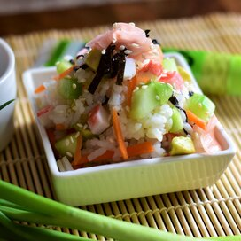

Sushi

Nutrition fact
Per Serving: 491 calories; protein 12.7g; carbohydrates 89.8g; fat 8.2g; cholesterol 17mg; sodium 948.7mg
Ingredients:
- 1 ½ cups sushi rice, or Japanese short-grain white rice
- 2 cups water
- ½ cup rice wine vinegar
- ¼ cup sugar
- ⅛ cup sake
- 12 ounces imitation crabmeat, flaked
- 1 cup seeded and chopped cucumber
- 1 avocado, chopped
- 1 tablespoon soy sauce, or to taste
Directions:
- Rinse rice in a strainer under cold water until water runs clear. Transfer rice to a medium saucepan, add 3 cups water, and bring to a boil. Reduce heat to low, cover, and cook under rice is tender and water is absorbed, about 20 minutes.
- Meanwhile, combine rice wine vinegar, sugar, and sake in a microwave-safe bowl. Microwave on high until sugar is completely dissolved, about 1 minute.
- Place cooked rice in a large bowl. Stir in vinegar mixture until well combined and let sit for 2 minutes. Stir again. Add imitation crabmeat, cucumber, and chopped avocado; mix well. Use soy sauce to season individual portions.
Back home